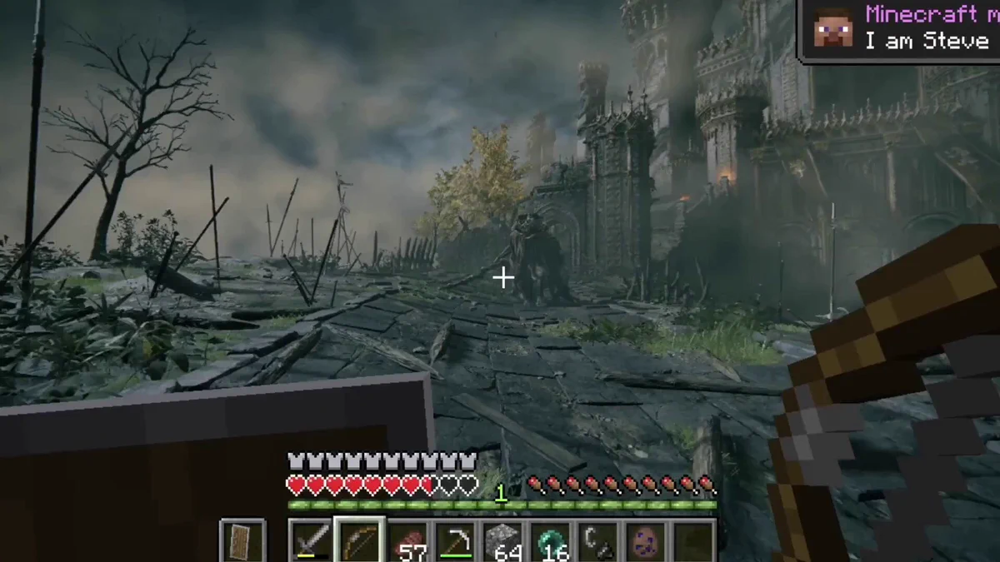

AI agents have advanced from where they were in past years, to the point that they can now give users the source codes to a game overnight. It can even combine two games together , making a makeshift mod almost of the two titles. This has allowed users to do things like having working versions of older titles running in your web browser. AI has drastically accelerated development, and is now being used to analyze and recreate code in a way humans aren't easily able to do.